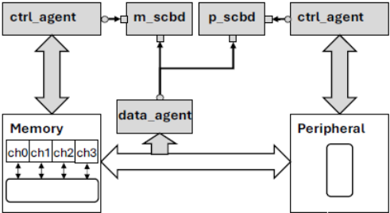
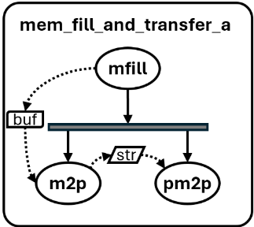
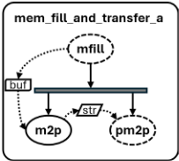
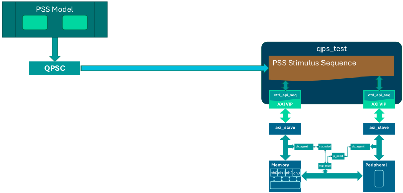
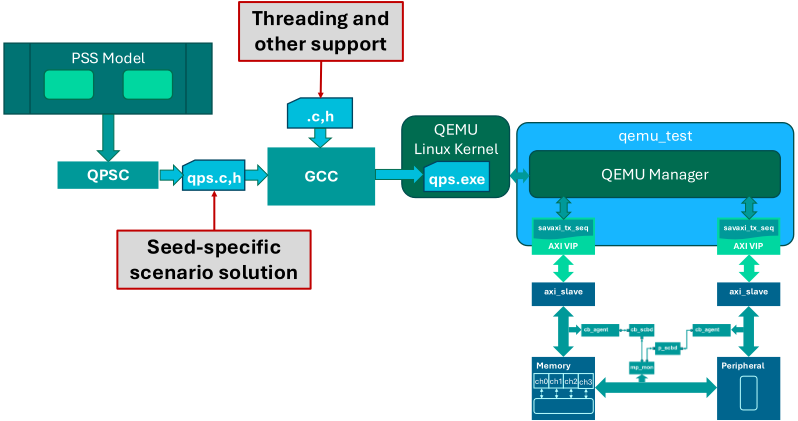
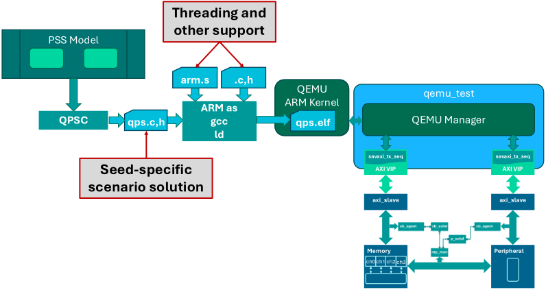
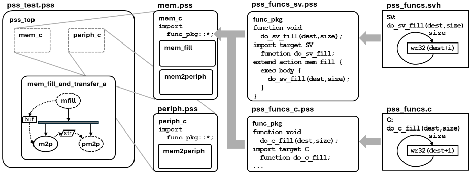
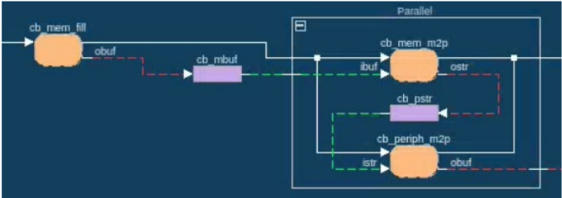
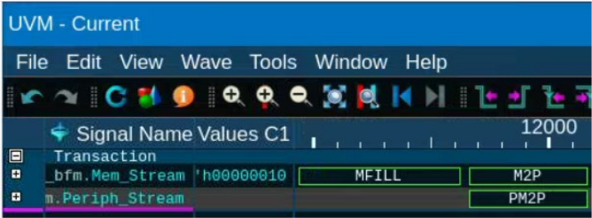
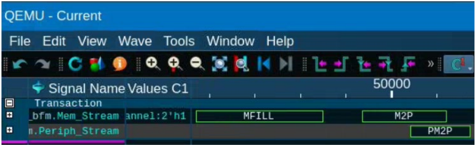

There and Back Again：基于 PSS 的仿真到硅片场景复用
论文针对验证团队需要在 UVM 仿真与 C 语言实验室/硅后环境重复实现相同测试场景的痛点，提出基于 Portable Test and Stimulus Standard（PSS）的场景复用方法学。方法上利用 PSS 抽象模型层与实现层分离的两层架构，以 action/activity/约束平台无关地描述验证意图，通过 exec body、exec declaration、exec header、run_start/run_end、post_solve 等 exec block 描述目标实现，并配合文件/包组织与求解器引导字段（如 step）控制场景推断。由此单一 PSS 模型可同时生成 UVM virtual sequence、Linux pthreads C 程序与 ARM 裸机 C 代码，并把期望数据与 ref_model() 检查内嵌到模型中，替代难以移植的 UVM scoreboard。作者用 Questa One 的 Portable Stimulus Compiler 完整演示了从 UVM 仿真到 QEMU 裸机执行的场景一致性，并声称可节省数周到数月的测试重写工时。
随着 SoC 复杂度增长，验证团队需要在 UVM 仿真环境与基于 C 的实验室/硅后环境执行完全相同的场景，但 UVM sequence 难以移植为 C 测试，导致同一场景需跨平台冗余维护，形成从仿真到硅后的验证鸿沟。
利用 PSS 两层架构：抽象模型层用 action、activity、buffer、constraint 平台无关地描述场景与数据流，支持部分规约下由工具推断补全动作，并可用 step 等求解器专用字段与 extension 约束文件引导或放开推断；实现层通过 exec body 映射目标语言方法、exec declaration/exec header 提供声明、exec run_start/run_end 处理调度器初始化与退出、exec post_solve 在求解后生成期望数据。并行执行在 SystemVerilog 目标用 fork/join，在 C 目标用通用线程 API（pss_thread_create/join、pss_scheduler_init/start）分别落到 Linux pthreads 或 ARM 裸机轮询调度。文件按组件/包组织，通过命令行选择目标实现。错误检查通过在 buffer 中携带 expected_data 并以 ref_model() 约束沿数据通路传递，在接收端 action 的 exec body 中调用 check_data 完成。实验使用 Questa One 的 Portable Stimulus Compiler（QPSC）与 QEMU-compatible UVM VIP。
单一 PSS 模型成功生成三种目标实现：UVM virtual sequence（fork/join 并行）、Linux pthreads C 可执行程序、ARM32 裸机 C 代码，并在 UVM 仿真与 QEMU 裸机环境中复现等价场景（论文以波形/截图对比展示）
通过在 buffer 中加入 step 等求解器专用字段并配合 extension 约束文件，可在不加约束时随机推断多种合法场景、加约束后收敛为指定 directed 场景
论文声称该流程可节省数周到数月原本用于把 UVM 仿真测试重写为 C 测试的工时（作者经验性论断，未给出量化测量数据）
除上述定性演示与经验性工时论断外，论文未提供覆盖率、回归时间等量化指标
论文贡献不在提出 PSS 标准本身，而在给出一套面向最大可移植性的 PSS 模型组织方法学：按组件/包拆分文件以命令行切换目标实现、系统化使用各类 exec block、以通用线程 API 抽象屏蔽 Linux pthreads 与 ARM 裸机差异、并将参考模型/期望数据嵌入 PSS 模型以替代不可移植的 UVM scoreboard，从而打通 UVM 仿真—Linux C—裸机—QEMU/仿真器/硅后的一致场景部署全流程。
相关度级别：high
命中能力域：2.4 设计验证方法学 | 2.6 仿真性能与加速器 | 2.7 EDA/验证自动化与 AI 辅助
理由：论文直接命中团队 2.4 设计验证方法学域：其核心是 UVM/SystemVerilog 验证平台上的场景建模与跨平台复用，正是团队 IP 验证交付的日常工程场景；存储与互连 IP（LPDDR/HBM/UCIe 等）在 SoC 集成、lab bring-up 与硅后阶段普遍需要 C 测试，与 UVM 仿真测试重复实现的痛点真实存在。同时命中 2.7（以单一 PSS 模型自动生成多目标测试、沉淀可复用验证内容/验证 IP）与 2.6（部署目标覆盖 emulation、RTL 处理器模型与硅后环境）。局限在于论文示例为简单的 memory-peripheral DMA 系统，未涉及团队面对的高速内存协议复杂度。
建议动作：深入精读并做内部分享
随着片上系统（SoC）设计复杂度的不断增长，验证团队在创建跨硬件与软件领域的可移植、可复用测试内容方面面临着日益严峻的挑战。现代软硬件协同开发中的一项关键需求，是在使用通用验证方法学（UVM）的仿真环境与在实际硬件上运行基于 C 语言测试的实验室环境中，无缝地执行完全相同的场景。尽管 SystemVerilog 和 UVM 提供了模块化、可复用的验证环境，但它们在实现跨领域场景可移植性方面仍有所不足。UVM 本身无法同时为基于 UVM 的仿真和基于 C 语言的实验室环境实现相同的复杂场景。UVM 序列在描述系统级场景方面的局限性，加之将 UVM 序列移植到基于 C 语言测试中的困难，造成了一个根本性的验证鸿沟。便携式激励标准（PSS）通过其两层架构来应对这些挑战，该架构将抽象建模与平台特定实现分离开来。在抽象模型层，PSS 使验证工程师能够以平台无关的方式定义测试场景、数据流和行为约束。实现层则处理平台特定的转换与执行细节，将抽象模型映射为用于基于 UVM 仿真的具体实现，或映射为可在包括仿真、硬件仿真和流片后在内的多个目标平台上执行的基于 C 语言的软件。这种分离消除了跨平台维护同一测试场景冗余版本的需要，同时实现了真正的测试可移植性。验证团队只需一次性开发出全面的抽象测试模型，随后便可利用自动化工具为每个目标环境生成相应的实现。
考虑一个简单的硬件系统（在 [1] 中有更详细的描述），它由一个支持直接存储器访问（DMA）的存储器和一个配套的外设组成。如图 1 所示，每个器件都支持一个数据/编程接口，用于向各器件加载数据或从各器件转储数据，或对相应的寄存器进行编程；同时还支持一个握手驱动的数据通道，用于在两者之间直接传输数据。图中的阴影方块表示典型的通用验证方法学（UVM）验证环境中的 UVM 组件，而白色方块则表示寄存器传输级（RTL）设计组件。

我们可以为该模型创建许多场景，但就本文而言，我们将聚焦于一个简单的测试场景：先用随机数据填充存储器中的一个缓冲区，然后将这些数据传输到外设。
PSS 提供了多种语言构造，可在不同抽象层次上对场景进行建模。与 SystemVerilog 和 UVM 一样，PSS 模型可以写成完全定向测试、定向随机测试或完全随机测试。让我们从一个定向随机测试开始，该测试将先向存储器加载数据，然后将这些数据传输到外设。请考虑以下代码片段：
action mem_fill_and_transfer_a { mem_c::mem_fill mfill; mem_c::mem2periph m2p; periph_c::mem2periph p_m2p; activity { mfill; parallel { m2p; p_m2p; } bind mfill.obuf m2p.ibuf; bind p_m2p.istr m2p.ostr; } }

在此示例中，activity 定义了场景的具体步骤：首先执行 mem_fill，它从某个特定地址开始，将所需大小的数据加载到存储器中；随后，存储器和外设并行执行互补的 mem2periph 操作，以完成二者之间的握手，并将给定大小的数据从存储器中的源地址传输到外设中的 FIFO。这两条 bind 语句确保将数据缓冲区发送到外设，该数据缓冲区对填充动作所创建数据的地址和大小进行了建模。
然而，PSS 真正的生产力提升源于其推断额外动作的能力，从而支持对验证意图的部分规约。假设我们真正想要验证的是存储器向外设发送数据的能力。如果这确实是我们的意图，那么我们可以将 activity 简化如下：
action mem_fill_and_transfer_a { mem_c::mem2periph m2p; activity { m2p; } }
action mem2periph { input cb_mbuf ibuf; output cb_pstr ostr; ... }
PSS 规则规定，输入缓冲区 ibuf 必须由另一个动作提供，因此工具可以推断出任何能够产生正确类型输出缓冲区的可用动作。在我们的示例中，该缓冲区可以如上所示由 mem_fill 动作提供，但也可以由 mem2mem 动作（未示出）提供，该动作将缓冲区从一个存储器位置移动到另一个存储器位置；或者由 periph2mem 动作（同样未示出）提供，该动作从外设获取数据并将其放入存储器。
PSS 中另一条起作用的规则是：任何由动作产生的流对象（在本例中为 cb_pstr 类型的 ostr 对象）都必须绑定到另一个输入相同类型流对象的动作上。在我们的系统中，唯一输入兼容流对象的动作是 periph_c::mem2periph 动作，因此必须与 m2p 并行地推断出该动作。
因此，对于这一场景，我们肯定会并行执行这两个 mem2periph 动作，但 PSS 工具可能会推断出若干动作中的某一个来提供 m2p 的输入。
我们可以通过向 cb_mbuf 缓冲区类型添加一个有用的字段，来确保求解器会推断出 mem_fill 动作。考虑如下：
buffer cb_mbuf { rand bit [32] addr; rand bit [32] size; // number of bytes rand bit[8] step; constraint c1 {step >= 0;} }
我们使用 step 字段来帮助引导求解器创建所需的场景，其做法是跟踪该场景中将完成多少次数据传输。由于 mem_fill 动作会启动任何场景，我们将在该动作的定义中添加一个约束：
action mem_fill { output cb_mbuf obuf; constraint c5 {obuf.step == 0;} }
如果我们想确保上述 mem_fill_and_transfer_a 动作总是推断出 mem_fill 动作，可以添加一个约束：
action mem_fill_and_transfer_a { mem_c::mem2periph m2p; constraint m2p.ibuf.step == 0; activity { m2p; } }

这要求输入到 m2p 的缓冲区具有为 0 的 step 值，而唯一能够产生 step==0 缓冲区的动作是 mem_fill，因此求解器必须推断出 mem_fill 来提供 m2p.ibuf。被推断出的动作在代码 6 所附的图中以虚线表示。为了提高复用性和灵活性，该约束也可以改为在 mem_fill_and_transfer_a 动作的一个扩展中定义，如下所示：
extend action mem_fill_and_transfer_a { constraint m2p.ibuf.step == 0; }
然后，可以将该扩展放入一个文件中，并在调用 PSS 求解器时将其包含在命令行中，以引导所推断出的场景。如果不包含该扩展，求解器就可以自由地随机推断出其他有效的场景。请注意，step 字段并不是最终所得场景的一部分。它仅由求解器用于确定要生成的合法场景。
诚然，如果我们只想定义代码 1 中所示的那个特定定向场景，我们本可以直接编写出该场景。这里展示 step 变量的引入与约束，是为了说明可以如何创建这样一个模型：它在默认情况下会产生多种多样的场景，同时又可以方便地通过约束来按需创建特定的定向场景。对于代码 6 中的部分规约，能够创建的场景数量显然取决于 step 变量的值。我们展示这一技术，是为了说明在模型中包含生成专用字段的强大之处：这些字段不会显式出现在实现中，但能让我们根据需要调整所生成的场景。
可移植激励标准（PSS）工具生成的测试实现会根据 PSS 活动模型中定义的调度与约束来协调动作的执行。生成的测试中的动作既可以顺序执行，也可以并行执行，其中多个动作并发运行以实现所需的系统行为。并行动作执行的实现方式本质上取决于目标语言。
因此，PSS 工具要生成测试场景的目标实现，必须完成两件事：它必须将 exec body 块中指定的方法调用转换为目标语言，并且必须在目标语言中生成一个框架，以便按照活动所定义的调度（包括任何约束和推断出的动作）来调用动作方法。
在 UVM/SystemVerilog 环境中，PSS 工具利用原生的 fork/join 结构来实现并行执行。图 2 展示了一种简单直接的工具流程：PSS 模型被直接编译为 UVM 虚拟序列（virtual sequence），并由测试用例运行。在此情况下，RTL 设计在图 1 的基础上进行了增强，为存储器和外设器件增加了 AXI4 接口。UVM 环境也相应地进行了增强，使用标准的 AXI4 VIP 组件来连接这些接口。动作的实现使用 VIP 提供的 API，正如最初的实现依赖于 UVM 环境中 cb_agent 组件的底层 API 一样，这些 cb_agent 组件现在被设置为被动模式以监视数据通路。

在图 2 中，标记为“QPSC”的方框代表 PSS 工具，该工具对 PSS 模型进行编译和求解，以生成特定于目标的实现。作者的实验是使用 Questa
class pss_gen_seq extends my_uvm_base_seq; `uvm_object_utils(pss_gen_seq) virtual task automatic do_mem_fill(input bit[31:0] dest, size); endtask ... task body(); do_mem_fill('h17d400, 'h10); fork do_mem_m2p(0, 'h17d400, 'h10); // use DMA channel 0 do_periph_m2p('h10); join endtask endclass
然后，该任务的具体实现可以由用户在从生成的序列派生出的序列中提供：
class my_pss_seq extends pss_gen_seq; `uvm_object_utils(my_pss_seq) virtual task automatic do_mem_fill(input bit[31:0] dest, size); for (int i = 0; i < size*4; i = i + 4) begin bit stat = std::randomize(data); ctrl_if_api.write32(dest+i, data); end endtask ... endclass 2
如果 PSS 工具没有自动插入该声明，那么就必须将其包含在 PSS 模型中，通常是通过扩展（extension）的方式来实现。
extend component cb_vip_ex_c { extend action mem_fill_and_transfer_a { exec declaration SV = """ virtual task do_cb_fill(bit[31:0] dest, size); endtask """; }
请注意，exec declaration 块的语法采用了 PSS 中所称的目标模板 exec 块（target template exec block），并指明了目标语言，在本例中为 SystemVerilog。还值得一提的是，由于 PSS 目前（工作组正在即将发布的版本中着手解决这一问题）只允许在动作上而不允许在组件上使用 exec declaration 块，因此向多个生成的序列提供 exec declaration 块的首选方式是：从同一个公共的抽象基动作派生出所需的根测试动作，并将 exec declaration 放在该基动作中。
component cb_vip_ex_c { abstract action test_base_a {} action mem_fill_and_transfer_a : test_base_a { ...// see declaration in Code 6 above } } extend component cb_vip_ex_c { extend action test_base_a { exec declaration SV = """ virtual task do_cb_fill(bit[31:0] dest, size); endtask """; }
基于 C 语言的实现需要一组不同的 exec declaration 块
2 请注意，代码 14 与代码 8 几乎完全相同，只是增加了额外的上下文：展示了 my_pss_seq 类中的任务定义。
extend component cb_vip_ex_c { extend action test_base_a { exec declaration C = """ extern void do_cb_fill(int dest, int size); ... """; }
但 C 测试生成还需要一种线程机制来支持并行执行。PSS 工具可以采用两种方法：直接生成平台特定的线程代码，或者使用一种通用线程 API，由其提供对平台特定细节的抽象。例如，C 实现可以使用 Linux pthreads 实现来编译（图 3），也可以使用针对特定目标平台的嵌入式实现来编译（图 4）。无论采用哪种方式，生成的代码及相关基础设施都会被编译成目标平台可执行的形式。请注意，Questa One 包含与 QEMU 兼容的 UVM VIP，使得仿真可以由编译出的可执行文件在针对特定 OS 定制的 QEMU 内核上驱动。类似的方法也适用于任何类似的 VIP 库。


请注意，在基于 ARM 的嵌入式软件（SW）设置中，.elf 文件也可以被加载到程序存储器中，由 ARM CPU 模型来执行，甚至可以在流片后（post-silicon）环境中由实际处理器运行。据推定，任何符合 PSS 的工具链都能够为生成的 C 代码支持类似的执行环境。
基于 API 的线程处理方法在更高的可移植性和可维护性方面具有相当大的优势。在代码 18 中，pss_thread* 方法的实现是特定于 OS 的。在生成 Linux 代码的情况下，工具可能默认使用标准 Pthread 库，也可能不会。如果默认使用，则对 PSS 代码没有额外要求。
void mem_fill_and_transfer_a(void) { do_mem_fill(0, 0x17d400, 0x10); { pss_thread_t branch_1 = pss_thread_create(&thread_func_1); pss_thread_t branch_2 = pss_thread_create(&thread_func_2); pss_thread_join(branch_1); pss_thread_join(branch_2); } } void thread_func_1(void) { do_cb_m2p(0, 0x17d400, 0x10); } void thread_func_2(void) { do_cb_periph_m2p(0x10); }
然而，这可能需要用户通过在 PSS 代码中指定一个 exec header 块3（同样，以扩展的形式）来确保生成的代码使用 Pthread 库：
3 在 PSS 中，exec header 块用于指定后续代码块所预设的声明，例如 #include 指令；与之相对，exec declaration 块则用于指定声明性语句，这些语句用来定义后续代码块所使用的实体，例如全局变量或函数的定义。
extend component cb_vip_ex_c { extend action test_base_a { exec header C = """ #include <pthread.h> ... """; }
在基于 ARM 的嵌入式代码生成的情况下，我们可以使用相同的线程 API，但现在必须考虑更多的事项。除了 thread_create 和 thread_join 调用之外，我们还必须确保线程机制在生成的序列执行之前被初始化（ pss_scheduler_init() ）并启动（ pss_scheduler_start() ），并且我们必须能够在结束时完成清理（ semihost_exit(0) ）。这是通过 exec run_start 和 exec run_end 块来实现的，其声明方式如下
extend component cb_vip_ex_c { extend action test_base_a { exec header C = """ #include 'arm_pss_threads.h' ... """; exec run_start C = """ pss_scheduler_init(); pss_scheduler_start(); """; exec run_end C = """ semihost_exit(0); """; exec declaration C = """ static inline void semihost_exit(int code){ register int op asm("r0") = 0x18; register int arg asm("r1") = code; asm volatile("hlt 0xf000" : : "r"(op),"r"(arg) : "memory"); } """; } }
exec post_solve 块允许 PSS 求解器在用于确定场景的常规约束求解过程中确定诸如 size 之类的字段，然后利用这些字段来确定最终细节，例如要写入的随机数据。通过将数据包含在缓冲区对象中，数据也必然会被传递到 mem_c::mem2periph 动作中。
extend action mem2periph { constraint ostr.expected_data == ref_model(ibuf.expected_data); } 代码 22：将期望数据传递给流输出的附加约束
对 ref_model() 的调用允许对数据进行适当的处理，以确保正确的数据值被传递下去。在退化情况下，ref_model() 将简单地返回输入数据。然后，在 periph_c::mem2periph 动作中，我们就可以执行实际的检查：
extend action mem2periph { exec body { check_data(istr,expected_data); } }
请注意，mem2periph 动作的实现将执行适当的目标操作来接收数据，同时还会检查接收到的数据是否与通过 PSS 模型传入的数据相匹配。
为了充分利用 PSS 所带来的复用与可移植性优势，在包与文件之间组织代码时必须进行一些预先规划。总体而言，我们建议将单个组件或包保存在其独立的文件中。这样，用户便可以通过在命令行上为 PSS 工具和/或使用所生成代码的仿真器指定所需的文件，来控制对给定元素使用哪一种具体实现。请看以下示例：

在 pss_test.pss 中定义的顶层 PSS 组件 pss_top 实例化了 mem_c 和 periph_c 组件，并定义了 mem_fill_and_transfer_a 动作。在 mem.pss 中定义的 mem_c 组件定义了相关的存储器动作，例如上文提到的 mem_fill 和 mem2periph。它导入了 func_pkg 包，而在本示例中我们为该包提供了两种实现。pss_funcs_sv.pss 文件导入了该行为的 SystemVerilog 版本（此处显示为 do_sv_fill），并扩展 mem_fill 动作以在 exec body 中调用该方法。pss_funcs_c.pss 文件则导入该方法的 C 版本，并将以类似方式扩展该动作以调用此版本。当所生成的文件被编译时，与语言相对应的源文件也会被一并编译，以提供该方法面向特定目标的实现。
通过这些 exec 块对 PSS 模型进行合理组织，可确保最大程度的复用性与可移植性。所生成的代码能够在所有目标环境中复现完全相同的场景，无论是 UVM 仿真、基于 Linux 的 C 环境，还是嵌入式裸机实现。
对于上文所示的代码片段，求解后的 PSS 场景可如下图所示进行可视化：

当所生成的序列在 UVM 环境中执行时，其结果可如图 5 的截图所示进行观察，其中 MFILL 表示 mem_fill 动作，M2P 表示 mem_c::mem2periph，PM2P 表示 periph_c::mem2periph。

使用嵌入式 ARM32 裸机 C 代码所生成的实现产生了等效的结果，如图 6 的 QEMU 界面截图所示。

在这一特定情形中，裸机线程包是通过一种人工生成（AI 辅助）的轮询机制实现的，这正是所示两条波形之间存在时序差异的原因。在图 5 中，SystemVerilog 的 fork/join 语义使 M2P 和 PM2P 方框看起来是同时启动的，而裸机线程包则允许 M2P 操作先启动，并在完成之前的某个时刻让出控制权，此后 PM2P 才能启动。这两幅图都是 PSS 模型所定义场景的有效实现，即 MFILL 在 M2P 或 PM2P 任何一方开始之前完成，且二者都在任何其他操作可以开始之前完成。
本文展示了一种利用可移植激励标准（PSS）在整个验证流程中实现真正场景可移植性的实用方法。通过使用适当的 exec 块合理组织 PSS 模型，并利用该标准的两层架构，验证团队可以一次性开发场景，并将其部署到通用验证方法学（UVM）仿真、基于 Linux 的 C 环境以及嵌入式裸机实现中。所提出的方法能够在整个开发周期内实现各验证环境之间的无缝过渡，从早期仿真一直到最终的硅片验证。PSS 的智能随机化能力，结合其平台无关的抽象建模层，在开发效率和验证覆盖率方面带来了显著收益。这种方法可以轻松节省数周乃至数月的时间，否则这些时间将耗费在把基于 UVM 的仿真测试重新实现为基于 C 的测试，以便在实验室或硅后阶段运行。
虽然我们是使用特定供应商的工具链来演示该方法的，但该方法学普遍适用于任何 PSS 用户，无论其使用的是哪款 PSS 工具，前提是该工具实现了 PSS 标准。